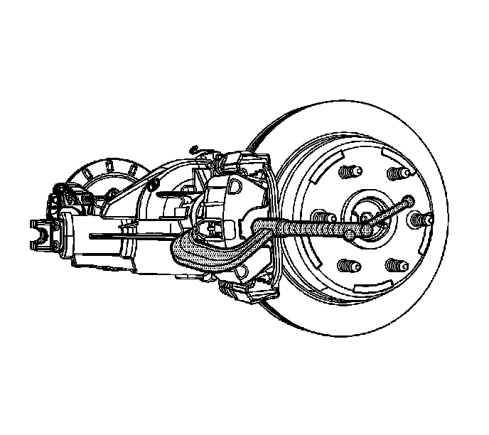
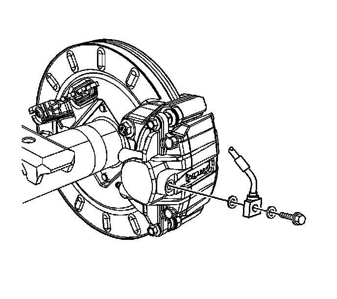
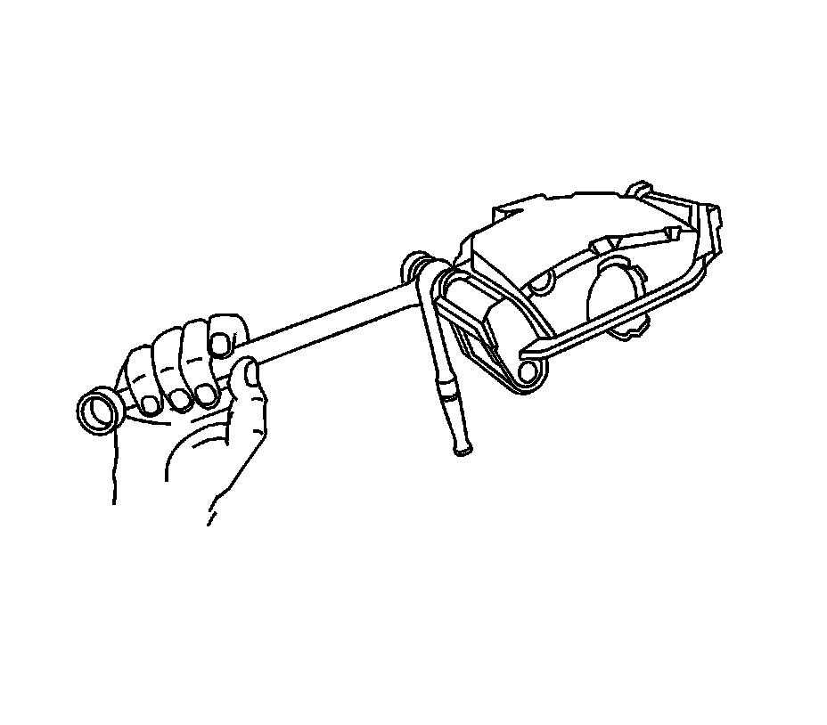
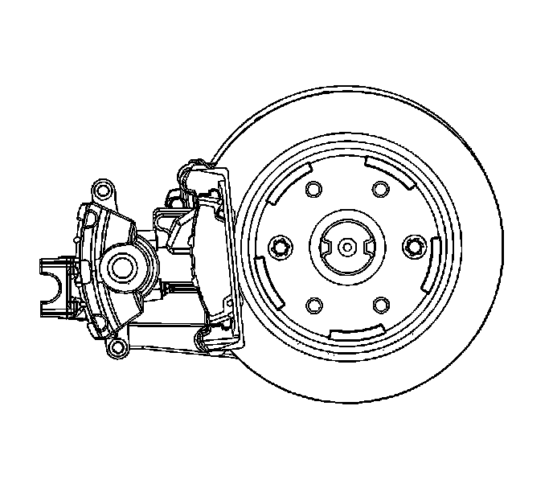
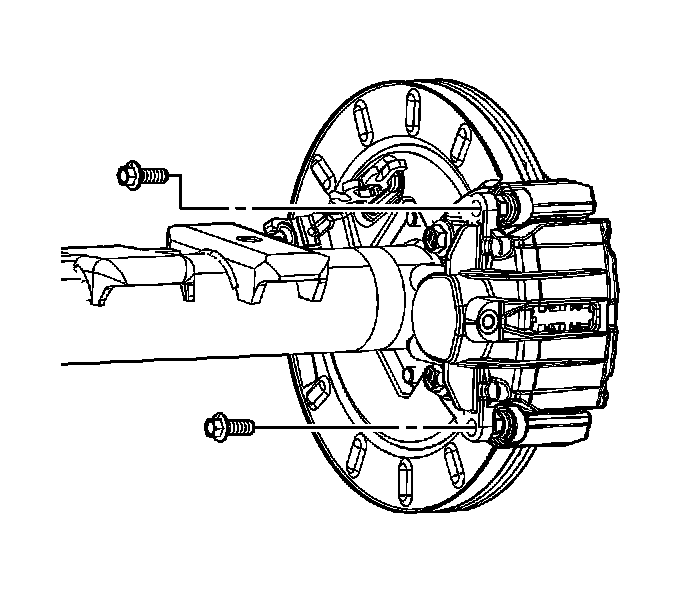

Rear Brake Caliper Replacement (1500 Series)
Rear Brake Caliper Replacement (1500 Series)
Caution: Refer to Brake Dust Caution.
Caution: Refer to Brake Fluid Irritant Caution.
Removal Procedure
1. Inspect the fluid level in the brake master cylinder reservoir.
2. If the fluid level is midway between the maximum-full point and the minimum allowable level, no fluid needs to be removed from the reservoir before proceeding.
3. If the fluid level is higher than midway between the maximum-full point and the minimum allowable level, remove fluid to the midway point before proceeding.
4. Raise and support the vehicle. Refer to Lifting and Jacking the Vehicle.
5. Remove the tire and wheel assembly.
6. Clean all dirt and foreign material from the brake hose fitting.

7. Compress the caliper piston.
1. Install a large C-clamp over the top of the caliper housing and against the back of the outboard pad.
2. Slowly tighten the C-clamp until the piston is pushed completely into the caliper bore.
3. Remove the C-clamp from the caliper.

Important: Cap or plug the brake pipe to prevent brake fluid leakage and contamination of the brake system.
8. Remove the brake hose to caliper bolt. Position the brake hose to the side.
Important:
^ Ensure that the copper gaskets are not attached to the brake caliper or the brake hose.
^ DO NOT re-use the copper gaskets, replace with NEW.
Remove and discard the 2 copper brake hose gaskets.

Important:
^ DO NOT use any air tools to remove or tighten the guide pin bolts. Use hand tools only.
^ Install an open end wrench to the guide pin and hold it in line with the caliper while removing or installing the caliper bolts. DO NOT allow the wrench to come in contact with the brake caliper. Allowing the wrench to come in contact with the brake caliper will cause a pulsation when the brake is applied.
Using an open end wrench to back up the caliper guide pin, remove the guide pin bolt

9. Remove the brake caliper from the mounting bracket.
Installation Procedure
1. Install the brake caliper on to the mounting bracket.

2. Perform the following procedure before installing the brake caliper guide pin bolts.
1. Remove all traces of the original adhesive patch.
2. Clean the threads of the bolt with brake parts cleaner or the equivalent and allow to dry.
3. Apply Threadlocker GM P/N 12345493 (Canadian P/N 10953488) to the threads of the bolt.
Notice: Refer to Fastener Notice.
Important:
^ DO NOT use any air tools to remove or tighten the guide pin bolts. Use hand tools only.
^ Install an open end wrench to the guide pin and hold it in line with the caliper while removing or installing the caliper bolts. DO NOT allow the wrench to come in contact with the brake caliper. Allowing the wrench to come in contact with the brake caliper will cause a pulsation when the brake is applied.
Use an open end wrench to hold the guide pins while tightening the guide pin bolts.
Tighten the bolts to 38 N.m (28 lb ft).
3. Remove the rubber cap or plug from the exposed brake hose fitting end.
4. Install the 2 NEW copper gaskets to the brake hose bolt and the brake hose fitting.
5. Install the brake hose to caliper bolt.
Tighten the bolt to 40 N.m (30 lb ft).
6. Bleed the hydraulic brake system. Refer to Hydraulic Brake System Bleeding.
7. Install the tire and wheel assembly.
8. Fill the master cylinder reservoir to the proper level with clean brake fluid, if necessary. Refer to Master Cylinder Reservoir Filling.